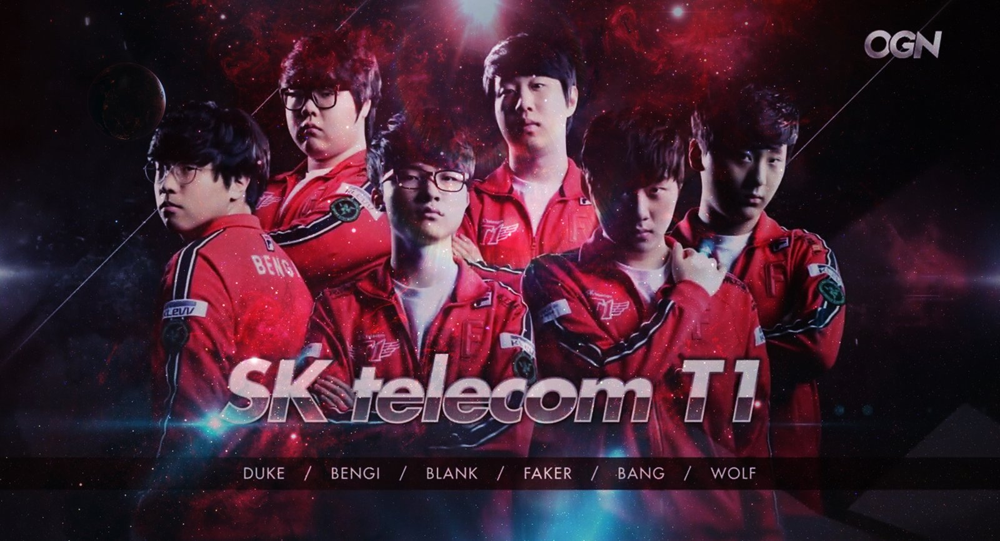
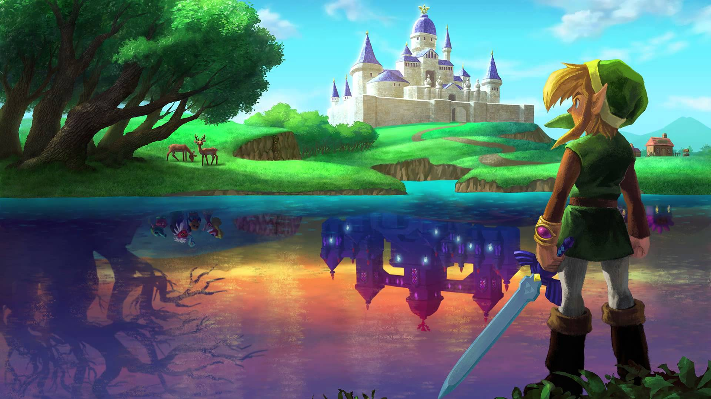

En Occidente, tenemos un estereotipo de ‘gamer’ que más o menos consiste en un adolescente encerrado frente a una pantalla con una consola conectada, jugando generalmente shooters y en condición de aislamiento de la sociedad. En el resto del mundo, sobre todo en Asia Oriental, la situación cambia drásticamente. Específicamente en Corea del Sur, las PC y los smartphones dominan el mercado, y es a través de estas plataformas que los ávidos consumidores se nutren de cualquier novedad en este campo.
Es un país con una densidad demográfica altísima, donde casi la mitad de la población vive en la capital. Por lo tanto, los hogares son muy pequeños, y la gente pasa la mayoría del tiempo fuera de su casa, misma que usa mayormente sólo para dormir. Después de establecer un poco de contexto, tal vez se pregunten, “¿dónde juega la gente?”. La respuesta se reduce a dos lugares: el transporte público y los PC Rooms.Los ordenadores de un PC Room cuentan con el catálogo más popular de juegos de moda, la mayoría tiene preinstalados desde clásicos como Starcraft (por supuesto), World of Warcraft, Counter Strike, Aion, Lineage y Everquest, hasta de lo más extraños, como simuladores de citas, juegos de cocina, y juegos de casino con personajes de anime. Incluso, estos establecimientos tienen acuerdos con compañías como Riot Games, Blizzard y Nexon para premiar y bonificar a los usuarios por jugar ahí.
Aunque la situación en Corea dista mucho de la idealizada que solemos tener en Europa, lo cierto es que han conseguido crear jugadores estrella como “Faker” o “Deft” al calor del éxito de League of Legends. Son muchos los jóvenes coreanos que ansían entrar en los equipos de esports más ilustres, como el de Samsung o SK Telecom, como vía para triunfar y escapar de un sistema educativo mucho más exigente que el español.
A pesar de que tuvo un humilde comienzo, la industria de los videojuegos ha crecido hoy en día, llegando a competir con industrias como la de la música y la del cine como una de las formas de entretenimiento que más dinero genera en el mundo.
En 1983, cuando las primeras ventas de sistemas de videojuegos como Nintendo aparecieron, los videojuegos comenzaron a llegar a los hogares, y la cultura del gaming comenzó.
En 1986 surgió del ingenio de Shigeru Miyamoto quizás el personaje de videojuegos más popular de todos los tiempos: Mario. Este plomero, junto con su hermano recorren diferentes castillos en busca de la Princesa Peach. Otro juego que nació ese mismo año y que también llegó a ser uno de los más vendidos fue The Legend of Zelda, que desde entonces ha sacado 16 juegos. Otro juego importante de la década de los ochentas es Metroid, diseñado por Makoto Kano y Hiroji Kiyotake, cuyo primer lanzamiento impresionó a los jugadores, al tratarse de la primera heroína de un videojuego.
Un videojuego que se popularizó entre 1996 y 1998 fue Pokemon. El juego desde entonces no ha variado su mecánica: atrapar a los 151 monstruos que se esconden en praderas o bosques, amaestrarlos y hacer que crezcan. El juego fue tan popular que después se hicieron juegos de cartas, mangas, series de televisión e incluso películas. Incluso el día de hoy ha llegado a ser la franquicia de videojuegos que más ventas tiene, superando a Super Mario Bros.
El comienzo del siglo 21 vio la diversificación de los videojuegos. Juegos en línea permitían que los jugadores interactuaran, permitiendo trabajar en equipo para lograr un objetivo en común. La industria de los videojuegos se ha sofisticado a tal punto, que es una experiencia multimedia que abarca varias disciplinas. El arte, la música, la creación de una historia interesante y de personajes con personalidad, han hecho que los videojuegos trasciendan de la cultura geek a otros grupos, llegando a ser ampliamente populares.
Hoy en día las mayores franquicias son Namco-Bandai, Capcom, Square Enix, Atlus, Tecmo-Koei, Konami y Sega, que han desarrollado videojuegos como Final Fantasy, Metal Gear, Monster Hunter, Dragon Quest, Dynasty Warriors, Biohazard, Street Fighter, Soulcalibur, Devil May Cry o Kingdom Hearts.
